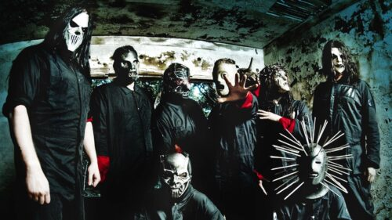

Slipknot iconono del Nu Metal

Historia de la banda
Nueve enmascarados, un sonido brutal y una actitud que desafía los límites del metal: así es Slipknot. Desde su explosiva irrupción en la escena en los 90, la banda de Des Moines, Iowa, se ha convertido en un fenómeno inigualable, llevando su agresiva mezcla de nu-metal, hardcore y death metal a estadios repletos de fanáticos frenéticos. "Siempre fuimos una banda de outsiders, pero convertimos eso en nuestra fortaleza", dijo en una ocasión Corey Taylor, la voz inconfundible detrás de los himnos más viscerales del grupo. Desde su álbum debut homónimo de 1999 hasta sus producciones más recientes, Slipknot ha logrado canalizar la rabia y el dolor en una propuesta musical que golpea como un mazo y resuena en millones de almas. Entre cambios de alineación, tragedias (como la muerte del bajista Paul Gray en 2010) y una constante evolución sonora, la banda ha mantenido su esencia intacta. Su directo es una catarsis colectiva, un ritual donde las máscaras no solo ocultan rostros, sino que amplifican la intensidad de su arte. Conocidos por sus enérgicas actuaciones en vivo, Slipknot es una fuerza imparable que ha dejado una huella imborrable en la historia del metal.
Los Nueve: La Hermandad del Caos
Slipknot no es solo una banda, es una máquina en la que cada engranaje tiene un papel fundamental. A lo largo de su historia, sus integrantes han dejado una marca imborrable en la banda y en la música.
Corey Taylor (#8 - Voz): Antes de unirse a Slipknot en 1997, Taylor ya era conocido en la escena local por su trabajo en Stone Sour. Su capacidad para alternar entre gritos desgarradores y melodías emotivas lo convirtió en el frontman perfecto para la locura de la banda. Su presencia escénica es magnética y su voz, una de las más versátiles del metal moderno.
Shawn "Clown" Crahan (#6 - Percusión, Visuales): El arquitecto de la banda y el único miembro original que ha permanecido desde su fundación en 1995. Clown es la mente creativa detrás del caos visual de Slipknot, además de aportar una percusión salvaje y visceral. Su enfoque artístico ha sido clave para la identidad de la banda.
Jim Root (#4 - Guitarra líder): Se unió a Slipknot en 1999, justo a tiempo para su álbum debut. Conocido por su técnica precisa y su habilidad para crear riffs memorables, Root es uno de los compositores principales de la banda. Su conexión con Corey Taylor viene desde Stone Sour, donde también es guitarrista.
Mick Thomson (#7 - Guitarra rítmica): La bestia del metal. Con su inconfundible máscara negra y actitud intimidante, Mick es el pilar del sonido pesado de Slipknot. Su amor por el death metal y su agresivo estilo de tocar han definido el sonido de la banda desde el inicio.
Sid Wilson (#0 - DJ, Efectos): El salvaje de la banda. Sid no solo añade capas electrónicas y scratches al sonido de Slipknot, sino que en los conciertos es el que más energía derrocha, lanzándose al público y escalando los escenarios. Su presencia es la chispa del caos.
ay Weinberg (#1 - Batería, 2014-2023): Hijo del legendario baterista de Bruce Springsteen, Max Weinberg, Jay asumió la difícil tarea de reemplazar a Joey Jordison en 2014. Su técnica poderosa y versatilidad mantuvieron el nivel que la banda requería.
Alessandro "V-Man" Venturella (#5 - Bajo, 2014-presente): Reemplazó a Paul Gray tras su fallecimiento en 2010. Antes de Slipknot, trabajó como técnico de guitarras para bandas como Mastodon. Su bajo sólido y oscuro se ha vuelto crucial para la estructura de la banda.
Craig Jones (#133 - Teclados y Samples): Conocido por su enigmática máscara de clavos, Craig ha sido el maestro del terror sonoro en Slipknot desde 1996. Sus atmósferas y efectos añaden la dosis de horror y brutalidad a las canciones.
Tortilla Man (#?- Percusión, 2019-presente): Su identidad se mantuvo en secreto por mucho tiempo, pero se cree que es Michael Pfaff. Su energía en el escenario y sus locuras lo han convertido en un digno sucesor de Chris Fehn.

Más Que una Banda, un Fenómeno Inquebrantable
Dos décadas después de su irrupción en la escena, Slipknot sigue siendo más que una banda: es una experiencia visceral, un fenómeno cultural que ha trascendido las barreras del metal para convertirse en un símbolo de resistencia, furia y autenticidad. Pocos grupos han logrado lo que Slipknot: construir una identidad tan fuerte que su música, su estética y su actitud se convierten en un estilo de vida para sus seguidores. Su brutalidad sonora, su energía en vivo y su compromiso con la evolución artística han hecho que, a pesar de los cambios en la alineación, las tragedias y las críticas, la banda siga en la cima de la escena mundial. Para los fanáticos, Slipknot no es solo un grupo de músicos enmascarados; es una hermandad, un refugio para aquellos que han encontrado en su música una válvula de escape, un grito de guerra contra la adversidad. Como Corey Taylor lo ha dicho en múltiples ocasiones: "Slipknot es para la gente que nunca se sintió parte de algo, y ahora tiene un lugar al que pertenecer". Desde sus primeros días en los clubes de Iowa hasta encabezar festivales como Download y Rock in Rio, la banda ha demostrado que la intensidad y la pasión no son negociables. Cada álbum es un testimonio de su evolución, cada concierto una ceremonia catártica donde miles de almas se unen en un mismo rugido. Y aunque el futuro es incierto, una cosa es segura: mientras haya rabia, caos y necesidad de expresión, Slipknot seguirá alzando la voz, gritando por aquellos que necesitan ser escuchados. Porque más allá de las máscaras, más allá de los riffs pesados y la percusión inhumana, Slipknot es, y siempre será, una banda hecha para aquellos que sienten que el mundo no los entiende. "No hacemos música para todos. Hacemos música para quienes la necesitan", dice Shawn Crahan. Y mientras haya un alma necesitada de esa furia hecha música, Slipknot nunca morirá.
Mejores exitos de Slipknot
| cancion | Audio |
|---|---|
| Duality | |
| Physcosocial | |
| Before i forget | |
| Unsainted |